Code
Procurement <- read.csv("Procurement.csv", header=TRUE, sep=";")
View(Procurement)I use ML techniques to predict and classify the value of the Procurement Contracts.
Procurement <- read.csv("Procurement.csv", header=TRUE, sep=";")
View(Procurement)
Attaching package: 'dplyr'The following objects are masked from 'package:stats':
filter, lagThe following objects are masked from 'package:base':
intersect, setdiff, setequal, union── Attaching packages ─────────────────────────────────────── tidyverse 1.3.2 ──
✔ tibble 3.1.8 ✔ purrr 1.0.1
✔ tidyr 1.2.0 ✔ stringr 1.4.0
✔ readr 2.1.2 ✔ forcats 0.5.1
── Conflicts ────────────────────────────────────────── tidyverse_conflicts() ──
✖ dplyr::filter() masks stats::filter()
✖ dplyr::lag() masks stats::lag()
Loading required package: Ecfun
Attaching package: 'Ecfun'
The following object is masked from 'package:base':
sign
Attaching package: 'Ecdat'
The following object is masked from 'package:datasets':
Orange
Loading required package: Matrix
Attaching package: 'Matrix'
The following objects are masked from 'package:tidyr':
expand, pack, unpack
Loaded glmnet 4.1-6 Min. 1st Qu. Median Mean 3rd Qu. Max. NA's
0.00 0.00 0.25 0.34 0.50 1.00 86535 [1] 0.3489315[1] 161465 country_wb_string country WBCode country_iso3
Length:161465 Length:161465 Length:161465 Length:161465
Class :character Class :character Class :character Class :character
Mode :character Mode :character Mode :character Mode :character
country_iso2 fyear year region
Length:161465 Min. :1998 Min. :1997 Length:161465
Class :character 1st Qu.:2000 1st Qu.:1999 Class :character
Mode :character Median :2002 Median :2001 Mode :character
Mean :2002 Mean :2002
3rd Qu.:2004 3rd Qu.:2004
Max. :2009 Max. :2009
pr_id pr_name pr_loannumber cft_methodtype
Length:161465 Length:161465 Length:161465 Length:161465
Class :character Class :character Class :character Class :character
Mode :character Mode :character Mode :character Mode :character
cft_sector ca_type ca_title ca_id
Length:161465 Length:161465 Length:161465 Length:161465
Class :character Class :character Class :character Class :character
Mode :character Mode :character Mode :character Mode :character
ca_nrbidsrec ca_nrbidscons ca_contract_value_original
Min. : 1.00 Length:161465 Length:161465
1st Qu.: 2.00 Class :character Class :character
Median : 3.00 Mode :character Mode :character
Mean : 5.02
3rd Qu.: 6.00
Max. :824.00
NA's :55151
ca_contract_value lca_contract_value ca_contract_valuec ca_signdate
Min. :0.000e+00 Min. :-3.632 Length:161465 Length:161465
1st Qu.:5.608e+04 1st Qu.:10.935 Class :character Class :character
Median :2.297e+05 Median :12.345 Mode :character Mode :character
Mean :1.876e+06 Mean :12.287
3rd Qu.:8.755e+05 3rd Qu.:13.683
Max. :2.132e+09 Max. :21.480
NA's :13 NA's :13
ca_date ca_bids_all ca_bids ca_procedure
Length:161465 Min. : 1.000 Min. : 1.000 Length:161465
Class :character 1st Qu.: 1.000 1st Qu.: 1.000 Class :character
Mode :character Median : 2.000 Median : 2.000 Mode :character
Mean : 3.918 Mean : 3.701
3rd Qu.: 4.000 3rd Qu.: 4.000
Max. :993.000 Max. :50.000
ca_signper ca_signper_corr ca_signper_corr5 ca_signper_corr25
Length:161465 Min. : 0.00 Length:161465 Min. : 1.00
Class :character 1st Qu.: 10.00 Class :character 1st Qu.: 8.00
Mode :character Median : 27.00 Mode :character Median :16.00
Mean : 48.92 Mean :15.13
3rd Qu.: 57.00 3rd Qu.:22.00
Max. :728.00 Max. :26.00
NA's :19568
w_name w_country w_id anb_name
Length:161465 Length:161465 Length:161465 Length:161465
Class :character Class :character Class :character Class :character
Mode :character Mode :character Mode :character Mode :character
SuppAwd b2_country b3_country b4_country
Min. :1.000 Length:161465 Length:161465 Length:161465
1st Qu.:1.000 Class :character Class :character Class :character
Median :1.000 Mode :character Mode :character Mode :character
Mean :1.049
3rd Qu.:1.000
Max. :7.000
ppp_original ppp country_st anb_id
Min. :0.108 Min. :0.1077 Length:161465 Min. : 1
1st Qu.:0.236 1st Qu.:0.2363 Class :character 1st Qu.: 3775
Median :0.306 Median :0.3107 Mode :character Median : 6902
Mean :0.330 Mean :0.3310 Mean : 7556
3rd Qu.:0.386 3rd Qu.:0.3865 3rd Qu.:11454
Max. :1.086 Max. :1.0864 Max. :15600
NA's :6868 NA's :11 NA's :366
procedure_type singleb prop_bidnr corr_proc
Length:161465 Min. :0.0000 Min. :0.0004 Length:161465
Class :character 1st Qu.:0.0000 1st Qu.:0.0625 Class :character
Mode :character Median :0.0000 Median :0.2500 Mode :character
Mean :0.4147 Mean :0.4676
3rd Qu.:1.0000 3rd Qu.:1.0000
Max. :1.0000 Max. :1.0000
corr_proc3 corr_signp corr_signp1 corr_signp2
Length:161465 Length:161465 Length:161465 Min. :0.0000
Class :character Class :character Class :character 1st Qu.:0.0000
Mode :character Mode :character Mode :character Median :0.0000
Mean :0.2533
3rd Qu.:1.0000
Max. :1.0000
corr_signp3 corr_signp4 corr_proc31 corr_proc32
Min. :0.0000 Min. :0.0000 Min. :0.000 Min. :0.000
1st Qu.:0.0000 1st Qu.:0.0000 1st Qu.:0.000 1st Qu.:0.000
Median :0.0000 Median :0.0000 Median :1.000 Median :0.000
Mean :0.1148 Mean :0.1212 Mean :0.556 Mean :0.228
3rd Qu.:0.0000 3rd Qu.:0.0000 3rd Qu.:1.000 3rd Qu.:0.000
Max. :1.0000 Max. :1.0000 Max. :1.000 Max. :1.000
corr_proc33 nrc w_iso sec_score
Min. :0.000 Min. : 2 Length:161465 Min. :31.38
1st Qu.:0.000 1st Qu.: 1707 Class :character 1st Qu.:50.11
Median :0.000 Median : 2752 Mode :character Median :53.92
Mean :0.216 Mean : 4989 Mean :55.61
3rd Qu.:0.000 3rd Qu.: 6202 3rd Qu.:58.00
Max. :1.000 Max. :15701 Max. :92.00
NA's :79897
sec_score_max taxhav taxhav_fixed taxhav3
Min. :31.38 Length:161465 Length:161465 Length:161465
1st Qu.:51.00 Class :character Class :character Class :character
Median :54.00 Mode :character Mode :character Mode :character
Mean :56.01
3rd Qu.:60.00
Max. :92.00
NA's :84096
taxhav3bi fsuppl taxhav31 taxhav32
Length:161465 Min. :0.0000 Min. :0.000 Min. :0.0000
Class :character 1st Qu.:0.0000 1st Qu.:0.000 1st Qu.:0.0000
Mode :character Median :0.0000 Median :0.000 Median :0.0000
Mean :0.2568 Mean :0.237 Mean :0.0148
3rd Qu.:1.0000 3rd Qu.:0.000 3rd Qu.:0.0000
Max. :1.0000 Max. :1.000 Max. :1.0000
taxhav33 taxhav34 cri_wb
Min. :0.000000 Min. :0.0000 Min. :0.0000
1st Qu.:0.000000 1st Qu.:0.0000 1st Qu.:0.0000
Median :0.000000 Median :1.0000 Median :0.2500
Mean :0.005017 Mean :0.7432 Mean :0.3419
3rd Qu.:0.000000 3rd Qu.:1.0000 3rd Qu.:0.5000
Max. :1.000000 Max. :1.0000 Max. :1.0000
Seeing unique values of categorical vars and descriptive stats of numerical ones.
[1] "National Competitive Bidding"
[2] "Single Source Selection"
[3] "International Competitive Bidding"
[4] "Direct Contracting"
[5] "Quality And Cost-Based Selection"
[6] "Limited International Bidding"
[7] "National Shopping"
[8] "International Shopping"
[9] "Selection Based On Consultant's Qualification"
[10] "Least Cost Selection"
[11] "Quality Based Selection"
[12] "Individual"
[13] "Selection Under a Fixed Budget"
[14] "CQS"
[15] "SHOP" [1] "Public admin, Law" "Health & social serv" "Education"
[4] "Water/sanit/fld prot" "Industry and trade" "Transportation"
[7] "Finance" "Agriculture" "Energy & mining"
[10] "Info & communication" "(H)" "(H)Multisector"
[13] "" "(H)Priv Sector Dev"
(H) (H)Multisector
61 66 28
(H)Priv Sector Dev Agriculture Education
1 13494 15424
Energy & mining Finance Health & social serv
11106 4878 25301
Industry and trade Info & communication Public admin, Law
7501 2067 46307
Transportation Water/sanit/fld prot
19215 16016 Sector can be divided into dummies later
[1] "Civil Works" "Consultant Services" "Goods" [1] 6 3 1 5 2 4 NA 7 17 19 10 12 8 11 16 9 21 13 14
[20] 15 23 27 18 250 25 26 20 22 28 24 40 109 35 70 50 38 36 100
[39] 56 33 31 58 57 48 45 30 41 79 39 67 65 32 47 54 29 76 34
[58] 133 64 52 55 78 80 105 44 71 230 43 87 82 69 824 37 46 101 170
[77] 149 Min. 1st Qu. Median Mean 3rd Qu. Max. NA's
1.00 2.00 3.00 5.02 6.00 824.00 55151 [1] "" "1" "2" "3" "5" "4" "7" "6" "88" "13" "8" "12"
[13] "11" "9" "23" "15" "113" "143" "22" "51" "101" "37" "993" "102"
[25] "14" "16" "10" "141" "886" "682" "986" "20" "21" "31" "26" "17"
[37] "60" Length Class Mode
161465 character character Min. 1st Qu. Median Mean 3rd Qu. Max.
0.0000 0.0000 1.0000 0.5107 1.0000 1.0000 Min. 1st Qu. Median Mean 3rd Qu. Max. NA's
0.000e+00 5.608e+04 2.297e+05 1.876e+06 8.755e+05 2.132e+09 13 Min. 1st Qu. Median Mean 3rd Qu. Max. NA's
0.000e+00 5.608e+04 2.297e+05 1.876e+06 8.755e+05 2.132e+09 13 Min. 1st Qu. Median Mean 3rd Qu. Max. NA's
-3.632 10.935 12.345 12.287 13.683 21.480 13 [1] "50.000-199.999" "200.000-" "0-24.999" "25.000-49.999"
[5] "" Length Class Mode
161465 character character
0-24.999 200.000- 25.000-49.999 50.000-199.999
13 23693 85200 14064 38495 [1] "open" "single source" "consultancy,cost"
[4] "restricted" "consultancy,quality"
consultancy,cost consultancy,quality open restricted
25508 9372 89770 7637
single source
29178 Min. 1st Qu. Median Mean 3rd Qu. Max. NA's
-29188.00 6.00 23.00 34.83 53.00 2076.00 4436 [1] 1 2 3 4 6 5 7 Min. 1st Qu. Median Mean 3rd Qu. Max.
1.000 1.000 1.000 1.049 1.000 7.000
1 2 3 4 5 6 7
155524 4462 1179 199 46 45 10 Min. 1st Qu. Median Mean 3rd Qu. Max. NA's
31.38 50.11 53.92 55.61 58.00 92.00 79897 [1] "National Competitive Bidding"
[2] "Single Source Selection"
[3] "International Competitive Bidding"
[4] "Direct Contracting"
[5] "Quality And Cost-Based Selection"
[6] "Limited International Bidding"
[7] "National Shopping"
[8] "International Shopping"
[9] "Selection Based On Consultant's Qualification"
[10] "Least Cost Selection"
[11] "Quality Based Selection"
[12] "Individual"
[13] "Selection Under a Fixed Budget"
Direct Contracting
5205
Individual
9782
International Competitive Bidding
48500
International Shopping
4004
Least Cost Selection
796
Limited International Bidding
1896
National Competitive Bidding
41270
National Shopping
1737
Quality And Cost-Based Selection
23916
Quality Based Selection
2354
Selection Based On Consultant's Qualification
7018
Selection Under a Fixed Budget
796
Single Source Selection
14191 [1] "domestic supplier" "NO tax haven" "tax haven"
domestic supplier NO tax haven tax haven
119994 38272 3199 [1] "domestic supplier" "NO tax haven" "tax haven" [1] "domestic supplier"
[2] "NO tax haven & tax haven,large state"
[3] "tax haven, small state" Min. 1st Qu. Median Mean 3rd Qu. Max.
0.0000 0.0000 0.2500 0.3419 0.5000 1.0000 [1] 0.00 0.25 0.75 0.50 1.00
0 0.25 0.5 0.75 1
42239 50405 36622 31594 605 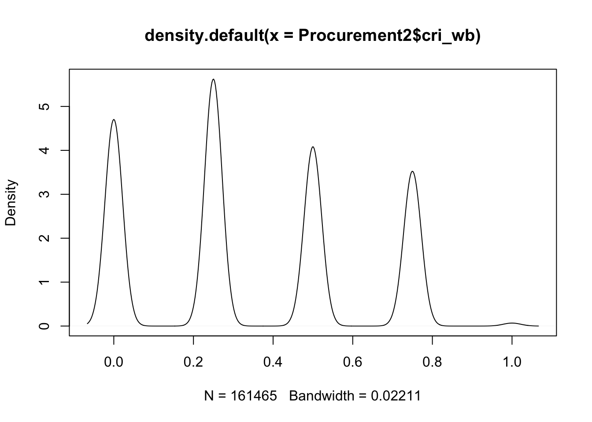
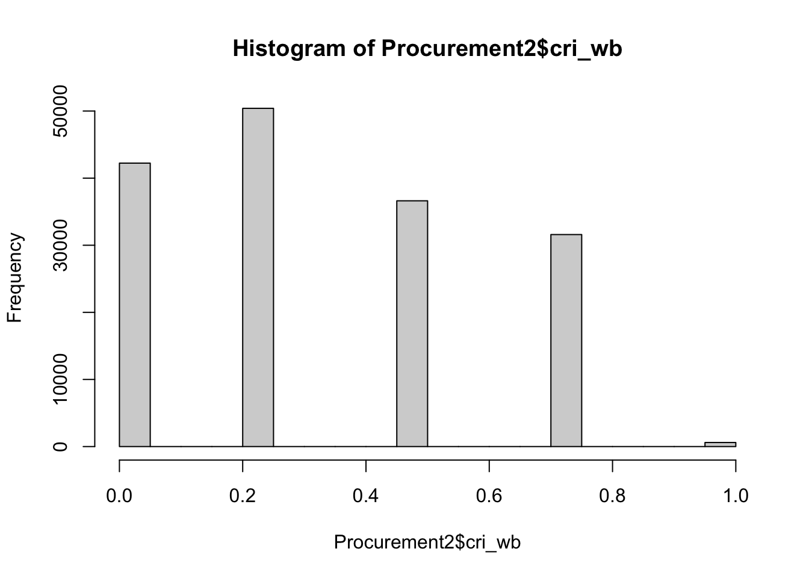
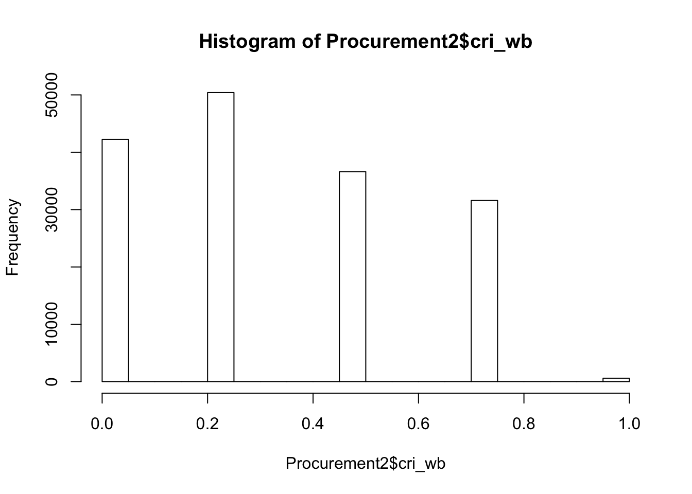
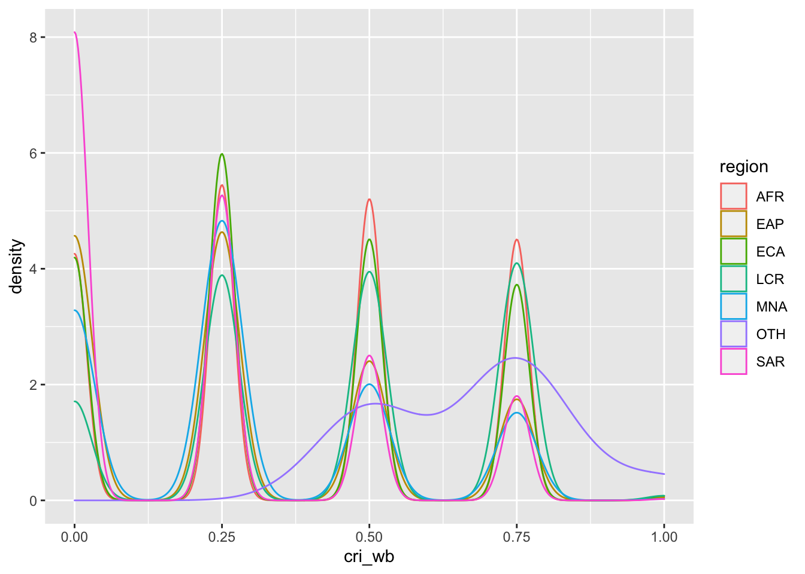
`summarise()` has grouped output by 'cri_wb.ch'. You can override using the
`.groups` argument.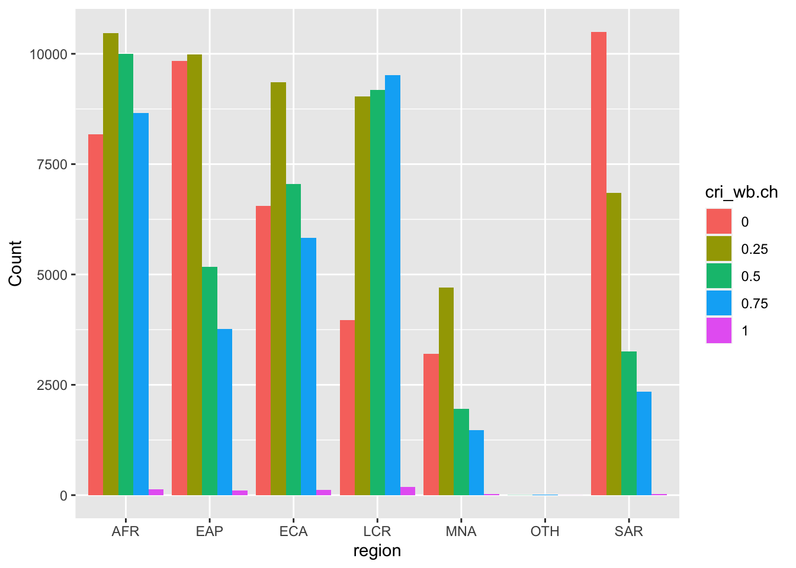
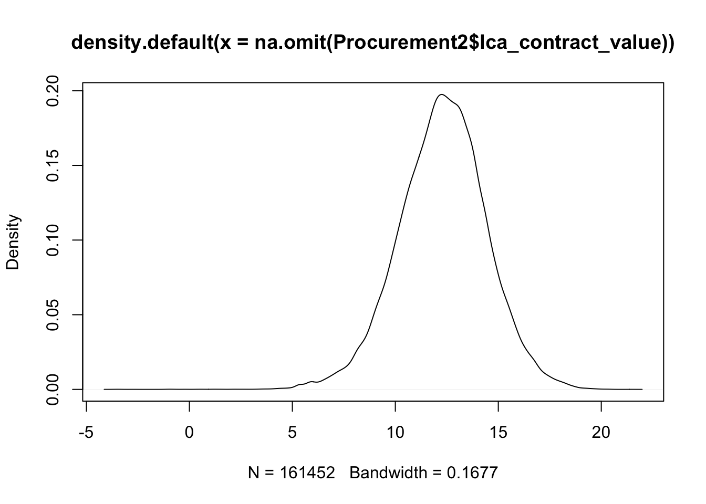
Warning: Removed 13 rows containing non-finite values (stat_density).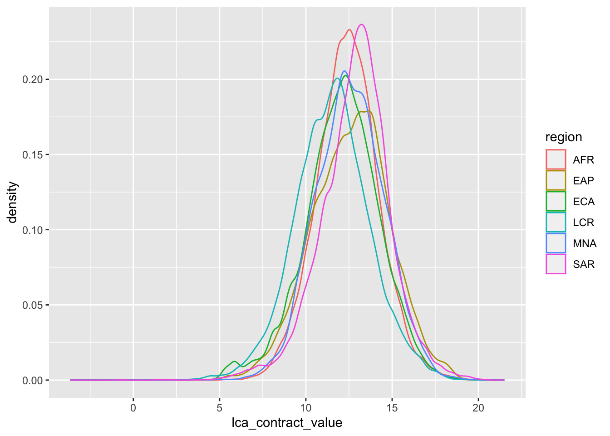
We can observe some differences, for example between regions like Sub-Saharan Africa and Latin America.
Warning: Removed 13 rows containing non-finite values (stat_density).Warning: Groups with fewer than two data points have been dropped.Warning in max(ids, na.rm = TRUE): no non-missing arguments to max; returning
-Inf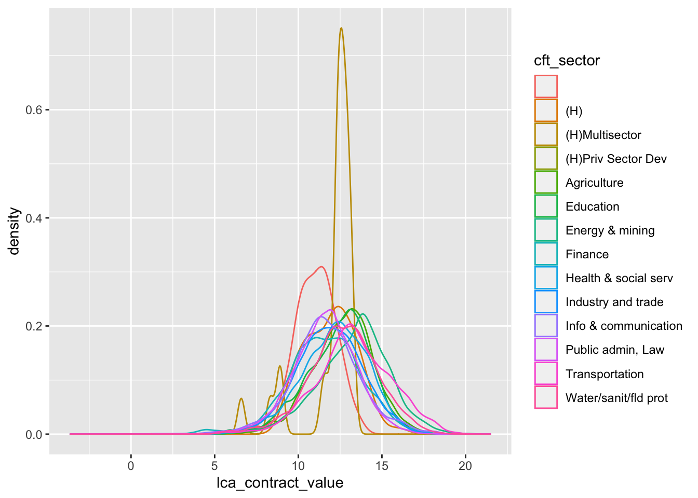
Again some differences are seen between for example Energy&Mining and Law, which makes sense, since Mining requires more costly equipment. The sector without a name seems to be an outlier almost.
Warning: Removed 13 rows containing non-finite values (stat_summary).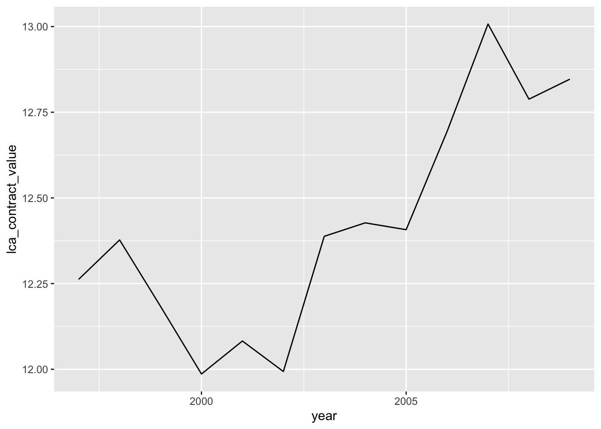
Generally increasing trend of average value per contract.
I run a simple regression with variables of interest to see if anything interesting happens
Call:
lm(formula = lca_contract_value ~ region + ca_type + ca_bids_all +
ca_procedure + singleb + corr_signp2 + corr_signp3 + corr_signp4 +
nrc + taxhav_fixed + cri_wb, data = Procurement2)
Residuals:
Min 1Q Median 3Q Max
-16.4957 -1.2318 0.0867 1.2818 8.4553
Coefficients: (1 not defined because of singularities)
Estimate Std. Error t value Pr(>|t|)
(Intercept) 1.358e+01 3.544e-02 383.279 < 2e-16 ***
regionEAP -5.604e-02 1.851e-02 -3.028 0.00247 **
regionECA -2.158e-01 1.546e-02 -13.959 < 2e-16 ***
regionLCR -5.246e-01 1.536e-02 -34.153 < 2e-16 ***
regionMNA 8.887e-02 2.102e-02 4.227 2.37e-05 ***
regionSAR -5.903e-02 2.073e-02 -2.848 0.00441 **
ca_typeConsultant Services -1.443e+00 3.071e-02 -46.986 < 2e-16 ***
ca_typeGoods -7.299e-01 1.279e-02 -57.051 < 2e-16 ***
ca_bids_all 6.982e-04 3.591e-04 1.945 0.05184 .
ca_procedureconsultancy,quality -9.478e-01 2.372e-02 -39.965 < 2e-16 ***
ca_procedureopen -6.071e-01 3.322e-02 -18.277 < 2e-16 ***
ca_procedurerestricted -1.573e+00 3.941e-02 -39.906 < 2e-16 ***
ca_proceduresingle source -7.534e-01 1.824e-02 -41.302 < 2e-16 ***
singleb -1.965e-01 1.232e-02 -15.949 < 2e-16 ***
corr_signp2 -2.161e-01 1.201e-02 -17.986 < 2e-16 ***
corr_signp3 2.122e-01 1.592e-02 13.331 < 2e-16 ***
corr_signp4 -5.635e-01 1.590e-02 -35.452 < 2e-16 ***
nrc 4.125e-05 1.467e-06 28.117 < 2e-16 ***
taxhav_fixedNO tax haven 8.181e-01 1.238e-02 66.078 < 2e-16 ***
taxhav_fixedtax haven 8.470e-01 3.503e-02 24.176 < 2e-16 ***
cri_wb NA NA NA NA
---
Signif. codes: 0 '***' 0.001 '**' 0.01 '*' 0.05 '.' 0.1 ' ' 1
Residual standard error: 1.935 on 161432 degrees of freedom
(13 observations deleted due to missingness)
Multiple R-squared: 0.1659, Adjusted R-squared: 0.1658
F-statistic: 1690 on 19 and 161432 DF, p-value: < 2.2e-16Adjusted R-squared is about 0.17, whereas cri_wb is dropped because of singularity.
[1] 604717.7RSS is quite big.
The variable for cri_wb was omitted due to singularities. Perhaps creating a dummy might change it.
I am creating several dummies for categorical vars.
[1] "Public admin, Law" "Health & social serv" "Education"
[4] "Water/sanit/fld prot" "Industry and trade" "Transportation"
[7] "Finance" "Agriculture" "Energy & mining"
[10] "Info & communication" "(H)" "(H)Multisector"
[13] "" "(H)Priv Sector Dev" For regression of the value per contract I am selecting the following variables: 1. Dummy variables for region, because there was a slight difference between the distributions of value by regions. 4. Procurement Sector, thinking some sectors tend to attract more valuable tender contracts. 2. Dummy for ca_type (Procurement Category) since the type of services can affect the value 3. Dummy for for n of bidders since higher n of bidders should indicate a higher price of the contract. 4. Dummy for contract award procedure associated with corruption. 5. Dummy for single bidder might indicate corrupted case, which can imply high value of the contract. 6. Period between when the contract was awarded and signed. 7. Number of contracts per country. 8. Whether the supplier is a domestic one or a tax haven. Foreign tax havens might indicate corruption and thus higher price. 9. The Corruption Index might be associated with the higher value of the contract.
Call:
lm(formula = lca_contract_value ~ ., data = Procurement3)
Residuals:
Min 1Q Median 3Q Max
-12.7818 -0.6101 -0.0397 0.5108 7.0744
Coefficients: (2 not defined because of singularities)
Estimate Std. Error t value Pr(>|t|)
(Intercept) 9.252e+00 1.382e-01 66.933 < 2e-16 ***
ca_contract_valuec200.000- 4.692e+00 7.916e-03 592.686 < 2e-16 ***
ca_contract_valuec25.000-49.999 1.543e+00 1.066e-02 144.820 < 2e-16 ***
ca_contract_valuec50.000-199.999 2.570e+00 8.370e-03 307.066 < 2e-16 ***
AFR 5.303e-02 1.071e-02 4.951 7.40e-07 ***
EAP 1.428e-01 9.106e-03 15.681 < 2e-16 ***
ECA 6.290e-02 1.089e-02 5.778 7.57e-09 ***
LCR 1.050e-01 1.050e-02 10.000 < 2e-16 ***
MNA 1.890e-01 1.336e-02 14.146 < 2e-16 ***
SAR NA NA NA NA
ca_Consul.Service -3.435e-01 1.593e-02 -21.562 < 2e-16 ***
ca_Goods -2.349e-01 6.761e-03 -34.744 < 2e-16 ***
ca_bids_all 1.069e-03 1.850e-04 5.782 7.40e-09 ***
ca_proc_open 2.515e-01 4.851e-02 5.184 2.17e-07 ***
ca_proc_quality -1.505e-01 1.232e-02 -12.215 < 2e-16 ***
ca_proc_source -6.125e-02 9.609e-03 -6.374 1.85e-10 ***
ca_proc_restricted -2.147e-01 2.046e-02 -10.492 < 2e-16 ***
singleb -2.465e-01 4.567e-02 -5.398 6.74e-08 ***
corr_signp1 3.224e-01 4.605e-02 7.001 2.55e-12 ***
corr_signp2 4.846e-02 8.781e-03 5.519 3.42e-08 ***
corr_signp3 2.146e-01 1.054e-02 20.355 < 2e-16 ***
nrc 1.587e-05 7.593e-07 20.903 < 2e-16 ***
taxhaven 1.119e-01 4.103e-02 2.728 0.006376 **
not.taxhaven 2.798e-01 6.462e-03 43.304 < 2e-16 ***
cri_wb.d0 -6.546e-01 1.366e-01 -4.791 1.66e-06 ***
cri_wb.d25 -5.129e-01 9.156e-02 -5.602 2.12e-08 ***
cri_wb.d50 -2.489e-01 4.666e-02 -5.334 9.61e-08 ***
cri_wb.d75 NA NA NA NA
P -2.145e-01 1.278e-01 -1.678 0.093383 .
Health -9.958e-02 1.279e-01 -0.779 0.436187
Edu -9.031e-02 1.280e-01 -0.706 0.480466
W 2.929e-02 1.280e-01 0.229 0.819010
I -1.220e-01 1.282e-01 -0.952 0.341306
Tran 3.261e-01 1.280e-01 2.549 0.010814 *
Fin -9.101e-02 1.285e-01 -0.708 0.478748
A -4.242e-02 1.280e-01 -0.331 0.740364
Ener 3.031e-01 1.281e-01 2.366 0.017991 *
Info -1.693e-01 1.296e-01 -1.306 0.191443
H -6.562e-02 1.771e-01 -0.371 0.710976
Multi -8.459e-01 2.276e-01 -3.717 0.000202 ***
Priv 5.614e-01 1.005e+00 0.559 0.576349
---
Signif. codes: 0 '***' 0.001 '**' 0.01 '*' 0.05 '.' 0.1 ' ' 1
Residual standard error: 0.9966 on 161413 degrees of freedom
Multiple R-squared: 0.7789, Adjusted R-squared: 0.7788
F-statistic: 1.496e+04 on 38 and 161413 DF, p-value: < 2.2e-16Two variables were dropped because of singularity still. Most of the remaining vars have high statistical significance.
ca_contract_valuec lca_contract_value AFR EAP
Length:161452 Min. :-3.632 Min. :0.000 Min. :0.0000
Class :character 1st Qu.:10.935 1st Qu.:0.000 1st Qu.:0.0000
Mode :character Median :12.345 Median :0.000 Median :0.0000
Mean :12.287 Mean :0.232 Mean :0.1787
3rd Qu.:13.683 3rd Qu.:0.000 3rd Qu.:0.0000
Max. :21.480 Max. :1.000 Max. :1.0000
ECA LCR MNA SAR
Min. :0.0000 Min. :0.0000 Min. :0.00000 Min. :0.0000
1st Qu.:0.0000 1st Qu.:0.0000 1st Qu.:0.00000 1st Qu.:0.0000
Median :0.0000 Median :0.0000 Median :0.00000 Median :0.0000
Mean :0.1791 Mean :0.1975 Mean :0.07035 Mean :0.1424
3rd Qu.:0.0000 3rd Qu.:0.0000 3rd Qu.:0.00000 3rd Qu.:0.0000
Max. :1.0000 Max. :1.0000 Max. :1.00000 Max. :1.0000
ca_Consul.Service ca_Goods ca_bids_all ca_proc_open
Min. :0.0000 Min. :0.0000 Min. : 1.000 Min. :0.000
1st Qu.:0.0000 1st Qu.:0.0000 1st Qu.: 1.000 1st Qu.:0.000
Median :0.0000 Median :0.0000 Median : 2.000 Median :1.000
Mean :0.3645 Mean :0.3459 Mean : 3.918 Mean :0.556
3rd Qu.:1.0000 3rd Qu.:1.0000 3rd Qu.: 4.000 3rd Qu.:1.000
Max. :1.0000 Max. :1.0000 Max. :993.000 Max. :1.000
ca_proc_quality ca_proc_source ca_proc_restricted singleb
Min. :0.00000 Min. :0.0000 Min. :0.0000 Min. :0.0000
1st Qu.:0.00000 1st Qu.:0.0000 1st Qu.:0.0000 1st Qu.:0.0000
Median :0.00000 Median :0.0000 Median :0.0000 Median :0.0000
Mean :0.05805 Mean :0.1806 Mean :0.0473 Mean :0.4147
3rd Qu.:0.00000 3rd Qu.:0.0000 3rd Qu.:0.0000 3rd Qu.:1.0000
Max. :1.00000 Max. :1.0000 Max. :1.0000 Max. :1.0000
corr_signp1 corr_signp2 corr_signp3 nrc
Min. :0.0000 Min. :0.0000 Min. :0.0000 Min. : 2
1st Qu.:0.0000 1st Qu.:0.0000 1st Qu.:0.0000 1st Qu.: 1707
Median :1.0000 Median :0.0000 Median :0.0000 Median : 2752
Mean :0.5108 Mean :0.2532 Mean :0.1148 Mean : 4990
3rd Qu.:1.0000 3rd Qu.:1.0000 3rd Qu.:0.0000 3rd Qu.: 6202
Max. :1.0000 Max. :1.0000 Max. :1.0000 Max. :15701
taxhaven not.taxhaven cri_wb.d0 cri_wb.d25
Min. :0.0000 Min. :0.000 Min. :0.0000 Min. :0.0000
1st Qu.:0.0000 1st Qu.:0.000 1st Qu.:0.0000 1st Qu.:0.0000
Median :0.0000 Median :0.000 Median :0.0000 Median :0.0000
Mean :0.0198 Mean :0.237 Mean :0.2616 Mean :0.3122
3rd Qu.:0.0000 3rd Qu.:0.000 3rd Qu.:1.0000 3rd Qu.:1.0000
Max. :1.0000 Max. :1.000 Max. :1.0000 Max. :1.0000
cri_wb.d50 cri_wb.d75 P Health
Min. :0.0000 Min. :0.0000 Min. :0.0000 Min. :0.0000
1st Qu.:0.0000 1st Qu.:0.0000 1st Qu.:0.0000 1st Qu.:0.0000
Median :0.0000 Median :0.0000 Median :0.0000 Median :0.0000
Mean :0.2268 Mean :0.1956 Mean :0.2868 Mean :0.1567
3rd Qu.:0.0000 3rd Qu.:0.0000 3rd Qu.:1.0000 3rd Qu.:0.0000
Max. :1.0000 Max. :1.0000 Max. :1.0000 Max. :1.0000
Edu W I Tran
Min. :0.00000 Min. :0.00000 Min. :0.00000 Min. :0.000
1st Qu.:0.00000 1st Qu.:0.00000 1st Qu.:0.00000 1st Qu.:0.000
Median :0.00000 Median :0.00000 Median :0.00000 Median :0.000
Mean :0.09553 Mean :0.09919 Mean :0.04646 Mean :0.119
3rd Qu.:0.00000 3rd Qu.:0.00000 3rd Qu.:0.00000 3rd Qu.:0.000
Max. :1.00000 Max. :1.00000 Max. :1.00000 Max. :1.000
Fin A Ener Info
Min. :0.00000 Min. :0.0000 Min. :0.00000 Min. :0.0000
1st Qu.:0.00000 1st Qu.:0.0000 1st Qu.:0.00000 1st Qu.:0.0000
Median :0.00000 Median :0.0000 Median :0.00000 Median :0.0000
Mean :0.03021 Mean :0.0835 Mean :0.06879 Mean :0.0128
3rd Qu.:0.00000 3rd Qu.:0.0000 3rd Qu.:0.00000 3rd Qu.:0.0000
Max. :1.00000 Max. :1.0000 Max. :1.00000 Max. :1.0000
H Multi Priv
Min. :0.0000000 Min. :0.0000000 Min. :0.0e+00
1st Qu.:0.0000000 1st Qu.:0.0000000 1st Qu.:0.0e+00
Median :0.0000000 Median :0.0000000 Median :0.0e+00
Mean :0.0004088 Mean :0.0001734 Mean :6.2e-06
3rd Qu.:0.0000000 3rd Qu.:0.0000000 3rd Qu.:0.0e+00
Max. :1.0000000 Max. :1.0000000 Max. :1.0e+00 35 x 1 sparse Matrix of class "dgCMatrix"
s0
(Intercept) 1.295066e+01
(Intercept) .
AFR 1.740151e-01
EAP 5.540119e-02
ECA -5.063949e-03
LCR -2.871303e-01
MNA 3.080603e-01
SAR 1.182342e-01
ca_Consul.Service -1.243931e+00
ca_Goods -6.270021e-01
ca_bids_all 9.673877e-04
ca_proc_open -4.830663e-01
ca_proc_quality -8.910647e-01
ca_proc_source -7.194468e-01
ca_proc_restricted -1.445686e+00
singleb -1.378996e-01
corr_signp1 5.353419e-01
corr_signp2 3.257312e-01
corr_signp3 7.423295e-01
nrc 3.892206e-05
taxhaven 8.405527e-01
not.taxhaven 8.169726e-01
P -9.535187e-01
Health -3.615957e-01
Edu -7.520389e-02
W 9.985832e-03
I -6.340170e-01
Tran 4.970437e-01
Fin -6.351149e-01
A 3.418690e-02
Ener 5.531834e-01
Info -8.652731e-01
H -1.507041e-01
Multi -5.725173e-01
Priv 1.060161e+00Coefficients of this regression did not drop the two from the lr2, which might be because the estimates in glmnet and lm will never be exactly the same and one is the subset of the other.
RMSE of the first Ridge regression is bigger than that of the unregularized linear regression. Seems that the optimal lambda should be small.
[1] 0.05474761The optimal lambda is very close to 0.
[1] 0.01582965[1] 0.01447194[1] 0.01409955The RMSE for Ridge regression with the optimal parameter is smaller than that with lambda 0 just a little bit. Which means regularized regression is just a little more efficient than the simple linear regression.
[1] 56996.77[1] 57044.26
Call:
lm(formula = train_y ~ ., data = train_x)
Residuals:
Min 1Q Median 3Q Max
-16.9811 -1.1631 0.0784 1.2355 8.4591
Coefficients: (1 not defined because of singularities)
Estimate Std. Error t value Pr(>|t|)
(Intercept) 1.231e+01 2.672e-01 46.051 < 2e-16 ***
AFR 5.563e-02 2.107e-02 2.640 0.008280 **
EAP -6.235e-02 1.788e-02 -3.488 0.000488 ***
ECA -1.228e-01 2.140e-02 -5.735 9.75e-09 ***
LCR -4.057e-01 2.058e-02 -19.717 < 2e-16 ***
MNA 1.897e-01 2.630e-02 7.215 5.40e-13 ***
SAR NA NA NA NA
ca_Consul.Service -1.254e+00 3.123e-02 -40.153 < 2e-16 ***
ca_Goods -6.273e-01 1.324e-02 -47.388 < 2e-16 ***
ca_bids_all 9.722e-04 3.647e-04 2.666 0.007686 **
ca_proc_open -4.938e-01 3.371e-02 -14.650 < 2e-16 ***
ca_proc_quality -8.915e-01 2.411e-02 -36.982 < 2e-16 ***
ca_proc_source -7.207e-01 1.854e-02 -38.863 < 2e-16 ***
ca_proc_restricted -1.456e+00 3.999e-02 -36.409 < 2e-16 ***
singleb -1.378e-01 1.251e-02 -11.009 < 2e-16 ***
corr_signp1 5.356e-01 1.612e-02 33.230 < 2e-16 ***
corr_signp2 3.258e-01 1.724e-02 18.900 < 2e-16 ***
corr_signp3 7.424e-01 2.055e-02 36.121 < 2e-16 ***
nrc 3.891e-05 1.493e-06 26.061 < 2e-16 ***
taxhaven 8.407e-01 3.551e-02 23.672 < 2e-16 ***
not.taxhaven 8.168e-01 1.261e-02 64.770 < 2e-16 ***
P -1.791e-01 2.635e-01 -0.679 0.496886
Health 4.127e-01 2.637e-01 1.565 0.117569
Edu 6.990e-01 2.639e-01 2.649 0.008080 **
W 7.842e-01 2.639e-01 2.972 0.002962 **
I 1.401e-01 2.643e-01 0.530 0.596089
Tran 1.271e+00 2.638e-01 4.818 1.45e-06 ***
Fin 1.388e-01 2.648e-01 0.524 0.600193
A 8.082e-01 2.639e-01 3.062 0.002199 **
Ener 1.327e+00 2.641e-01 5.026 5.03e-07 ***
Info -9.151e-02 2.669e-01 -0.343 0.731706
H 6.233e-01 3.608e-01 1.728 0.084042 .
Multi 2.018e-01 4.622e-01 0.437 0.662471
Priv 1.833e+00 1.879e+00 0.976 0.329313
---
Signif. codes: 0 '***' 0.001 '**' 0.01 '*' 0.05 '.' 0.1 ' ' 1
Residual standard error: 1.861 on 145274 degrees of freedom
Multiple R-squared: 0.2276, Adjusted R-squared: 0.2275
F-statistic: 1338 on 32 and 145274 DF, p-value: < 2.2e-16Warning in predict.lm(lr3, test_x): prediction from a rank-deficient fit may be
misleading[1] 56998.57Residual Sums Squared are almost identical for both regressions. Given that, I’d suggest sticking to a simpler model, i.e. unpenalized Linear Regression Model.
Later in the research I discovered that cri_wb caused multicollinearity, so I removed it and performed Ridge regression again
[1] 0.01447194[1] 56996.77[1] 0.05474761The optimal lambda is very close to 0.
[1] 0.01409955[1] 57044.26
Call:
glm(formula = value.cat ~ ., family = binomial(link = "logit"),
data = Procurement4)
Deviance Residuals:
Min 1Q Median 3Q Max
-2.1680 -1.0435 0.5946 0.9686 2.4301
Coefficients: (2 not defined because of singularities)
Estimate Std. Error z value Pr(>|z|)
(Intercept) 2.173e-01 3.725e-01 0.583 0.559751
AFR -1.557e-01 2.348e-02 -6.632 3.32e-11 ***
EAP -2.572e-01 2.025e-02 -12.697 < 2e-16 ***
ECA -2.847e-01 2.384e-02 -11.941 < 2e-16 ***
LCR -6.262e-01 2.302e-02 -27.201 < 2e-16 ***
MNA -8.363e-02 2.911e-02 -2.873 0.004065 **
SAR NA NA NA NA
ca_Consul.Service -1.132e+00 3.419e-02 -33.102 < 2e-16 ***
ca_Goods -4.248e-01 1.462e-02 -29.046 < 2e-16 ***
ca_bids_all 3.636e-04 4.081e-04 0.891 0.372981
ca_proc_open -2.588e-01 1.072e-01 -2.414 0.015777 *
ca_proc_quality -7.728e-01 2.734e-02 -28.270 < 2e-16 ***
ca_proc_source -8.616e-01 2.107e-02 -40.888 < 2e-16 ***
ca_proc_restricted -1.399e+00 4.401e-02 -31.799 < 2e-16 ***
singleb -4.436e-01 1.012e-01 -4.381 1.18e-05 ***
corr_signp1 8.260e-01 1.021e-01 8.090 5.98e-16 ***
corr_signp2 3.143e-01 1.952e-02 16.099 < 2e-16 ***
corr_signp3 6.527e-01 2.323e-02 28.100 < 2e-16 ***
nrc 2.967e-05 1.669e-06 17.774 < 2e-16 ***
taxhaven 4.303e-01 9.095e-02 4.731 2.23e-06 ***
not.taxhaven 6.952e-01 1.412e-02 49.228 < 2e-16 ***
cri_wb.d0 -9.895e-01 3.031e-01 -3.265 0.001095 **
cri_wb.d25 -7.253e-01 2.031e-01 -3.572 0.000354 ***
cri_wb.d50 -3.457e-01 1.035e-01 -3.341 0.000834 ***
cri_wb.d75 NA NA NA NA
P 3.103e-01 3.543e-01 0.876 0.381088
Health 9.720e-01 3.544e-01 2.743 0.006092 **
Edu 1.355e+00 3.545e-01 3.822 0.000132 ***
W 1.275e+00 3.545e-01 3.596 0.000323 ***
I 6.389e-01 3.550e-01 1.800 0.071878 .
Tran 1.641e+00 3.545e-01 4.629 3.68e-06 ***
Fin 7.281e-01 3.554e-01 2.049 0.040501 *
A 1.378e+00 3.546e-01 3.885 0.000102 ***
Ener 1.716e+00 3.548e-01 4.837 1.32e-06 ***
Info 3.506e-01 3.573e-01 0.981 0.326468
H 1.121e+00 4.383e-01 2.557 0.010551 *
Multi 2.200e+00 5.811e-01 3.786 0.000153 ***
Priv 7.657e+00 2.667e+01 0.287 0.774001
---
Signif. codes: 0 '***' 0.001 '**' 0.01 '*' 0.05 '.' 0.1 ' ' 1
(Dispersion parameter for binomial family taken to be 1)
Null deviance: 223324 on 161451 degrees of freedom
Residual deviance: 195143 on 161416 degrees of freedom
AIC: 195215
Number of Fisher Scoring iterations: 6
Call:
glm(formula = train_y.log ~ ., family = binomial(link = "logit"),
data = train_x.log)
Deviance Residuals:
Min 1Q Median 3Q Max
-2.1717 -1.0427 0.5951 0.9680 2.4297
Coefficients: (2 not defined because of singularities)
Estimate Std. Error z value Pr(>|z|)
(Intercept) 1.446e-01 4.138e-01 0.349 0.726831
AFR -1.496e-01 2.475e-02 -6.045 1.49e-09 ***
EAP -2.556e-01 2.132e-02 -11.987 < 2e-16 ***
ECA -2.766e-01 2.514e-02 -11.005 < 2e-16 ***
LCR -6.208e-01 2.426e-02 -25.591 < 2e-16 ***
MNA -6.703e-02 3.071e-02 -2.183 0.029056 *
SAR NA NA NA NA
ca_Consul.Service -1.121e+00 3.604e-02 -31.096 < 2e-16 ***
ca_Goods -4.294e-01 1.541e-02 -27.856 < 2e-16 ***
ca_bids_all 3.483e-04 4.278e-04 0.814 0.415608
ca_proc_open -2.637e-01 1.128e-01 -2.338 0.019403 *
ca_proc_quality -7.794e-01 2.887e-02 -26.995 < 2e-16 ***
ca_proc_source -8.612e-01 2.224e-02 -38.728 < 2e-16 ***
ca_proc_restricted -1.396e+00 4.643e-02 -30.069 < 2e-16 ***
singleb -4.285e-01 1.065e-01 -4.025 5.70e-05 ***
corr_signp1 8.177e-01 1.073e-01 7.620 2.54e-14 ***
corr_signp2 3.158e-01 2.057e-02 15.352 < 2e-16 ***
corr_signp3 6.552e-01 2.447e-02 26.772 < 2e-16 ***
nrc 2.977e-05 1.760e-06 16.917 < 2e-16 ***
taxhaven 4.361e-01 9.553e-02 4.565 5.00e-06 ***
not.taxhaven 6.971e-01 1.491e-02 46.765 < 2e-16 ***
cri_wb.d0 -9.462e-01 3.186e-01 -2.970 0.002982 **
cri_wb.d25 -7.003e-01 2.135e-01 -3.280 0.001037 **
cri_wb.d50 -3.246e-01 1.088e-01 -2.983 0.002850 **
cri_wb.d75 NA NA NA NA
P 3.490e-01 3.955e-01 0.882 0.377560
Health 1.020e+00 3.956e-01 2.579 0.009897 **
Edu 1.398e+00 3.958e-01 3.533 0.000411 ***
W 1.311e+00 3.958e-01 3.313 0.000924 ***
I 6.749e-01 3.962e-01 1.704 0.088465 .
Tran 1.680e+00 3.957e-01 4.245 2.19e-05 ***
Fin 7.710e-01 3.966e-01 1.944 0.051913 .
A 1.418e+00 3.958e-01 3.582 0.000341 ***
Ener 1.769e+00 3.960e-01 4.467 7.94e-06 ***
Info 3.904e-01 3.985e-01 0.979 0.327335
H 1.155e+00 4.832e-01 2.391 0.016820 *
Multi 2.246e+00 6.367e-01 3.527 0.000420 ***
Priv 8.699e+00 4.396e+01 0.198 0.843127
---
Signif. codes: 0 '***' 0.001 '**' 0.01 '*' 0.05 '.' 0.1 ' ' 1
(Dispersion parameter for binomial family taken to be 1)
Null deviance: 200979 on 145306 degrees of freedom
Residual deviance: 175595 on 145271 degrees of freedom
AIC: 175667
Number of Fisher Scoring iterations: 7Warning in predict.lm(object, newdata, se.fit, scale = 1, type = if (type == :
prediction from a rank-deficient fit may be misleading 8 14 34 51 55 63
0.6394443 0.6120216 0.4675069 0.3935432 0.4991478 0.7957945 8 14 34 51 55 63
1 1 0 0 0 1 [1] 0.6716011Model :
train_y.log ~ AFR + EAP + ECA + LCR + MNA + SAR + ca_Consul.Service +
ca_Goods + ca_bids_all + ca_proc_open + ca_proc_quality +
ca_proc_source + ca_proc_restricted + singleb + corr_signp1 +
corr_signp2 + corr_signp3 + nrc + taxhaven + not.taxhaven +
cri_wb.d0 + cri_wb.d25 + cri_wb.d50 + cri_wb.d75 + P + Health +
Edu + W + I + Tran + Fin + A + Ener + Info + H + Multi +
Priv
Complete :
(Intercept) AFR EAP ECA LCR MNA ca_Consul.Service ca_Goods
SAR 1 -1 -1 -1 -1 -1 0 0
cri_wb.d75 2 0 0 0 0 0 0 0
ca_bids_all ca_proc_open ca_proc_quality ca_proc_source
SAR 0 0 0 0
cri_wb.d75 0 1 0 0
ca_proc_restricted singleb corr_signp1 corr_signp2 corr_signp3 nrc
SAR 0 0 0 0 0 0
cri_wb.d75 0 -1 1 0 0 0
taxhaven not.taxhaven cri_wb.d0 cri_wb.d25 cri_wb.d50 P Health Edu
SAR 0 0 0 0 0 0 0 0
cri_wb.d75 -1 0 -4 -3 -2 0 0 0
W I Tran Fin A Ener Info H Multi Priv
SAR 0 0 0 0 0 0 0 0 0 0
cri_wb.d75 0 0 0 0 0 0 0 0 0 0 NULL
Call:
glm(formula = train_y.log ~ ., family = binomial(link = "logit"),
data = train_x.log2)
Deviance Residuals:
Min 1Q Median 3Q Max
-2.1247 -1.0546 0.5972 0.9890 2.3543
Coefficients:
Estimate Std. Error z value Pr(>|z|)
(Intercept) -4.547e-01 3.980e-01 -1.142 0.253301
ca_Consul.Service -1.164e+00 3.587e-02 -32.450 < 2e-16 ***
ca_Goods -4.829e-01 1.515e-02 -31.880 < 2e-16 ***
ca_proc_open -5.625e-01 3.864e-02 -14.559 < 2e-16 ***
ca_proc_quality -7.681e-01 2.861e-02 -26.849 < 2e-16 ***
ca_proc_source -8.259e-01 2.176e-02 -37.948 < 2e-16 ***
ca_proc_restricted -1.451e+00 4.600e-02 -31.536 < 2e-16 ***
singleb -1.536e-01 1.412e-02 -10.880 < 2e-16 ***
corr_signp1 5.438e-01 1.899e-02 28.637 < 2e-16 ***
corr_signp2 3.407e-01 2.035e-02 16.740 < 2e-16 ***
corr_signp3 6.837e-01 2.421e-02 28.246 < 2e-16 ***
nrc 3.793e-05 1.264e-06 30.010 < 2e-16 ***
taxhaven 7.224e-01 4.179e-02 17.286 < 2e-16 ***
not.taxhaven 7.763e-01 1.460e-02 53.159 < 2e-16 ***
P 2.943e-01 3.954e-01 0.744 0.456650
Health 9.874e-01 3.955e-01 2.496 0.012545 *
Edu 1.335e+00 3.957e-01 3.373 0.000743 ***
W 1.257e+00 3.957e-01 3.176 0.001496 **
I 6.348e-01 3.961e-01 1.603 0.109024
Tran 1.625e+00 3.957e-01 4.108 3.99e-05 ***
Fin 7.117e-01 3.966e-01 1.795 0.072714 .
A 1.386e+00 3.958e-01 3.502 0.000461 ***
Ener 1.728e+00 3.960e-01 4.364 1.28e-05 ***
Info 3.181e-01 3.984e-01 0.798 0.424710
H 1.137e+00 4.840e-01 2.349 0.018802 *
Multi 2.320e+00 6.344e-01 3.657 0.000255 ***
Priv 8.504e+00 4.396e+01 0.193 0.846597
---
Signif. codes: 0 '***' 0.001 '**' 0.01 '*' 0.05 '.' 0.1 ' ' 1
(Dispersion parameter for binomial family taken to be 1)
Null deviance: 200979 on 145306 degrees of freedom
Residual deviance: 176745 on 145280 degrees of freedom
AIC: 176799
Number of Fisher Scoring iterations: 7NULL 8 14 34 51 55 63
0.6194700 0.5866468 0.4000703 0.3530457 0.4693526 0.7737040 8 14 34 51 55 63
1 1 0 0 0 1 [1] 0.6688758[1] 0.7562713[1] 0.7529266[1] 0.7591205
Call:
lm(formula = train_y ~ bs(nrc, degree = 3) + Edu + Ener + Multi,
data = train_x)
Residuals:
Min 1Q Median 3Q Max
-16.3907 -1.3039 0.0776 1.3431 9.4819
Coefficients:
Estimate Std. Error t value Pr(>|t|)
(Intercept) 11.99366 0.01865 643.154 <2e-16 ***
bs(nrc, degree = 3)1 -0.03461 0.06848 -0.505 0.613
bs(nrc, degree = 3)2 0.62123 0.06629 9.371 <2e-16 ***
bs(nrc, degree = 3)3 0.87160 0.02672 32.625 <2e-16 ***
Edu 0.27344 0.01862 14.682 <2e-16 ***
Ener 1.03912 0.02175 47.769 <2e-16 ***
Multi -0.21348 0.42393 -0.504 0.615
---
Signif. codes: 0 '***' 0.001 '**' 0.01 '*' 0.05 '.' 0.1 ' ' 1
Residual standard error: 2.077 on 145300 degrees of freedom
Multiple R-squared: 0.03805, Adjusted R-squared: 0.03801
F-statistic: 957.9 on 6 and 145300 DF, p-value: < 2.2e-16 8 14 34 51 55 63
11.99398 12.26742 12.26742 12.00141 12.00141 12.00141 [1] 8.978580 12.802028 13.114779 9.409601 12.325201 14.210191[1] 0.01513323[1] 70996.55 Min. 1st Qu. Median Mean 3rd Qu. Max.
0.6446 10.9005 12.3221 12.2694 13.6952 20.3544
Call:
lm(formula = train_y ~ bs(nrc, degree = 3) + bs(ca_bids_all,
degree = 3) + Edu + Ener + Multi, data = train_x)
Residuals:
Min 1Q Median 3Q Max
-16.3182 -1.2970 0.0857 1.3408 9.3605
Coefficients:
Estimate Std. Error t value Pr(>|t|)
(Intercept) 11.90826 0.01882 632.741 < 2e-16 ***
bs(nrc, degree = 3)1 0.01477 0.06829 0.216 0.82881
bs(nrc, degree = 3)2 0.53280 0.06617 8.052 8.2e-16 ***
bs(nrc, degree = 3)3 0.84187 0.02665 31.586 < 2e-16 ***
bs(ca_bids_all, degree = 3)1 11.07475 0.38349 28.879 < 2e-16 ***
bs(ca_bids_all, degree = 3)2 -2.73186 1.81815 -1.503 0.13296
bs(ca_bids_all, degree = 3)3 2.58227 0.83824 3.081 0.00207 **
Edu 0.24309 0.01860 13.072 < 2e-16 ***
Ener 1.04128 0.02169 48.014 < 2e-16 ***
Multi -0.20574 0.42263 -0.487 0.62639
---
Signif. codes: 0 '***' 0.001 '**' 0.01 '*' 0.05 '.' 0.1 ' ' 1
Residual standard error: 2.07 on 145297 degrees of freedom
Multiple R-squared: 0.04394, Adjusted R-squared: 0.04388
F-statistic: 742 on 9 and 145297 DF, p-value: < 2.2e-16[1] 70454.6[1] 0.01356418`geom_smooth()` using method = 'gam' and formula 'y ~ s(x, bs = "cs")'
`geom_smooth()` using method = 'gam' and formula 'y ~ s(x, bs = "cs")'
[1] 23225[1] 294[1] 0.002017656[1] 0.1599802`geom_smooth()` using method = 'gam' and formula 'y ~ s(x, bs = "cs")'


[1] -0.8413083 -0.8413083 -0.8413083 -0.8413083 -0.8413083 -0.8413083[1] 0.5530255 -0.1404550 -0.1404550 -0.6027754 0.3218654 0.5530255 Min. 1st Qu. Median Mean 3rd Qu. Max.
-1.0156 -0.6685 -0.4557 0.0000 0.2466 2.1803 Min. 1st Qu. Median Mean 3rd Qu. Max.
-0.6028 -0.6028 -0.3716 0.0000 0.0907 10.2618 Min. 1st Qu. Median Mean 3rd Qu. Max.
-3.632 10.933 12.344 12.286 13.681 21.480
Call:
lm(formula = train_y.sp ~ bs(nrc, degree = 3) + bs(ca_bids_all,
degree = 3) + Edu + Ener + Multi, data = train_x.sp)
Residuals:
Min 1Q Median 3Q Max
-16.2785 -1.2860 0.0873 1.3266 8.8929
Coefficients:
Estimate Std. Error t value Pr(>|t|)
(Intercept) 11.68783 0.01908 612.483 < 2e-16 ***
bs(nrc, degree = 3)1 0.10699 0.06769 1.581 0.114
bs(nrc, degree = 3)2 0.40187 0.06573 6.114 9.74e-10 ***
bs(nrc, degree = 3)3 0.74986 0.02645 28.347 < 2e-16 ***
bs(ca_bids_all, degree = 3)1 3.52129 0.06223 56.588 < 2e-16 ***
bs(ca_bids_all, degree = 3)2 -3.71759 0.16550 -22.463 < 2e-16 ***
bs(ca_bids_all, degree = 3)3 0.90606 0.17384 5.212 1.87e-07 ***
Edu 0.23924 0.01849 12.941 < 2e-16 ***
Ener 0.98373 0.02148 45.797 < 2e-16 ***
Multi -0.24564 0.39442 -0.623 0.533
---
Signif. codes: 0 '***' 0.001 '**' 0.01 '*' 0.05 '.' 0.1 ' ' 1
Residual standard error: 2.049 on 145002 degrees of freedom
Multiple R-squared: 0.06263, Adjusted R-squared: 0.06257
F-statistic: 1076 on 9 and 145002 DF, p-value: < 2.2e-16 8 14 34 51 55 56
12.49270 12.33904 11.94622 12.11588 11.93343 12.11588 [1] 69440.65[1] 0.01712034
Call:
lm(formula = train_y.sp ~ bs(nrc, degree = 1) + bs(ca_bids_all,
degree = 1) + Edu + Ener + Multi, data = train_x.sp)
Residuals:
Min 1Q Median 3Q Max
-16.3155 -1.2925 0.0838 1.3407 9.3581
Coefficients:
Estimate Std. Error t value Pr(>|t|)
(Intercept) 11.808730 0.008531 1384.211 <2e-16 ***
bs(nrc, degree = 1) 0.888195 0.017549 50.612 <2e-16 ***
bs(ca_bids_all, degree = 1) 1.883331 0.059426 31.692 <2e-16 ***
Edu 0.225089 0.018657 12.064 <2e-16 ***
Ener 1.032723 0.021591 47.832 <2e-16 ***
Multi -0.178013 0.398264 -0.447 0.655
---
Signif. codes: 0 '***' 0.001 '**' 0.01 '*' 0.05 '.' 0.1 ' ' 1
Residual standard error: 2.069 on 145006 degrees of freedom
Multiple R-squared: 0.04415, Adjusted R-squared: 0.04412
F-statistic: 1340 on 5 and 145006 DF, p-value: < 2.2e-16 8 14 34 51 55 56
12.05751 12.16239 12.08225 11.97277 11.93270 11.97277 [1] 0.01716597[1] 70568.34[1] 0 Min. 1st Qu. Median Mean 3rd Qu. Max.
11.05 11.81 12.15 12.29 12.65 14.43 Min. 1st Qu. Median Mean 3rd Qu. Max.
-0.6561 10.9044 12.3478 12.2704 13.6981 20.3544 Loading required package: nlme
Attaching package: 'nlme'The following object is masked from 'package:Ecdat':
GasolineThe following object is masked from 'package:dplyr':
collapseThis is mgcv 1.8-39. For overview type 'help("mgcv-package")'.
Family: gaussian
Link function: identity
Formula:
train_y.sp ~ bs(nrc, degree = 3) + bs(ca_bids_all, degree = 3) +
Edu + Ener + Multi
Parametric coefficients:
Estimate Std. Error t value Pr(>|t|)
(Intercept) 11.68783 0.01908 612.483 < 2e-16 ***
bs(nrc, degree = 3)1 0.10699 0.06769 1.581 0.114
bs(nrc, degree = 3)2 0.40187 0.06573 6.114 9.74e-10 ***
bs(nrc, degree = 3)3 0.74986 0.02645 28.347 < 2e-16 ***
bs(ca_bids_all, degree = 3)1 3.52129 0.06223 56.588 < 2e-16 ***
bs(ca_bids_all, degree = 3)2 -3.71759 0.16550 -22.463 < 2e-16 ***
bs(ca_bids_all, degree = 3)3 0.90606 0.17384 5.212 1.87e-07 ***
Edu 0.23924 0.01849 12.941 < 2e-16 ***
Ener 0.98373 0.02148 45.797 < 2e-16 ***
Multi -0.24564 0.39442 -0.623 0.533
---
Signif. codes: 0 '***' 0.001 '**' 0.01 '*' 0.05 '.' 0.1 ' ' 1
R-sq.(adj) = 0.0626 Deviance explained = 6.26%
GCV = 4.1992 Scale est. = 4.1989 n = 145012[1] 69440.65[1] 0.01712034
Family: gaussian
Link function: identity
Formula:
train_y ~ bs(nrc, degree = 3) + bs(ca_bids_all, degree = 3) +
Edu + Ener + Multi
Parametric coefficients:
Estimate Std. Error t value Pr(>|t|)
(Intercept) 11.90826 0.01882 632.741 < 2e-16 ***
bs(nrc, degree = 3)1 0.01477 0.06829 0.216 0.82881
bs(nrc, degree = 3)2 0.53280 0.06617 8.052 8.2e-16 ***
bs(nrc, degree = 3)3 0.84187 0.02665 31.586 < 2e-16 ***
bs(ca_bids_all, degree = 3)1 11.07475 0.38349 28.879 < 2e-16 ***
bs(ca_bids_all, degree = 3)2 -2.73186 1.81815 -1.503 0.13296
bs(ca_bids_all, degree = 3)3 2.58227 0.83824 3.081 0.00207 **
Edu 0.24309 0.01860 13.072 < 2e-16 ***
Ener 1.04128 0.02169 48.014 < 2e-16 ***
Multi -0.20574 0.42263 -0.487 0.62639
---
Signif. codes: 0 '***' 0.001 '**' 0.01 '*' 0.05 '.' 0.1 ' ' 1
R-sq.(adj) = 0.0439 Deviance explained = 4.39%
GCV = 4.2859 Scale est. = 4.2856 n = 145307[1] 70454.6[1] 0.01356418 (Intercept) bs(nrc, degree = 3)1
11.6878264 0.1069901
bs(nrc, degree = 3)2 bs(nrc, degree = 3)3
0.4018697 0.7498629
bs(ca_bids_all, degree = 3)1 bs(ca_bids_all, degree = 3)2
3.5212868 -3.7175900
bs(ca_bids_all, degree = 3)3 Edu
0.9060622 0.2392372
Ener Multi
0.9837282 -0.2456402 
Call:
lm(formula = train_y.sp ~ nrc + ca_bids_all + Edu + Ener + Multi,
data = train_x.sp)
Residuals:
Min 1Q Median 3Q Max
-16.3155 -1.2925 0.0838 1.3407 9.3581
Coefficients:
Estimate Std. Error t value Pr(>|t|)
(Intercept) 12.195462 0.005944 2051.686 <2e-16 ***
nrc 0.277917 0.005491 50.612 <2e-16 ***
ca_bids_all 0.173347 0.005470 31.692 <2e-16 ***
Edu 0.225089 0.018657 12.064 <2e-16 ***
Ener 1.032723 0.021591 47.832 <2e-16 ***
Multi -0.178013 0.398264 -0.447 0.655
---
Signif. codes: 0 '***' 0.001 '**' 0.01 '*' 0.05 '.' 0.1 ' ' 1
Residual standard error: 2.069 on 145006 degrees of freedom
Multiple R-squared: 0.04415, Adjusted R-squared: 0.04412
F-statistic: 1340 on 5 and 145006 DF, p-value: < 2.2e-16[1] 0.01716597[1] 70568.34
Family: gaussian
Link function: identity
Formula:
train_y ~ bs(nrc, degree = 3) + bs(ca_bids_all, degree = 3) +
AFR + EAP + ECA + LCR + MNA + SAR + ca_Consul.Service + ca_Goods +
ca_proc_open + ca_proc_quality + ca_proc_source + ca_proc_restricted +
corr_signp1 + corr_signp2 + corr_signp3 + taxhaven + not.taxhaven +
P + Health + Edu + W + I + Tran + Fin + A + Ener + Info +
H + Multi + Priv
Parametric coefficients:
Estimate Std. Error t value Pr(>|t|)
(Intercept) 10.24556 0.22866 44.806 < 2e-16 ***
bs(nrc, degree = 3)1 0.83188 0.07045 11.807 < 2e-16 ***
bs(nrc, degree = 3)2 0.64910 0.07630 8.507 < 2e-16 ***
bs(nrc, degree = 3)3 0.71961 0.02955 24.356 < 2e-16 ***
bs(ca_bids_all, degree = 3)1 -0.07827 0.36783 -0.213 0.83150
bs(ca_bids_all, degree = 3)2 6.43106 1.63680 3.929 8.53e-05 ***
bs(ca_bids_all, degree = 3)3 -0.64031 0.75370 -0.850 0.39557
AFR 1.82642 0.03962 46.100 < 2e-16 ***
EAP 1.70413 0.04063 41.944 < 2e-16 ***
ECA 1.63749 0.03979 41.158 < 2e-16 ***
LCR 1.30747 0.03976 32.884 < 2e-16 ***
MNA 1.98542 0.04169 47.623 < 2e-16 ***
SAR 1.78463 0.04135 43.156 < 2e-16 ***
ca_Consul.Service -1.26199 0.03122 -40.428 < 2e-16 ***
ca_Goods -0.63796 0.01323 -48.204 < 2e-16 ***
ca_proc_open -0.42812 0.03361 -12.739 < 2e-16 ***
ca_proc_quality -0.91561 0.02399 -38.174 < 2e-16 ***
ca_proc_source -0.76538 0.01804 -42.417 < 2e-16 ***
ca_proc_restricted -1.38403 0.03981 -34.767 < 2e-16 ***
corr_signp1 0.53926 0.01612 33.450 < 2e-16 ***
corr_signp2 0.32408 0.01723 18.805 < 2e-16 ***
corr_signp3 0.75086 0.02056 36.521 < 2e-16 ***
taxhaven 0.86965 0.03552 24.482 < 2e-16 ***
not.taxhaven 0.83840 0.01265 66.259 < 2e-16 ***
P -0.16916 0.26336 -0.642 0.52066
Health 0.42271 0.26350 1.604 0.10867
Edu 0.70060 0.26369 2.657 0.00789 **
W 0.79292 0.26368 3.007 0.00264 **
I 0.15557 0.26414 0.589 0.55589
Tran 1.27607 0.26362 4.841 1.30e-06 ***
Fin 0.15867 0.26461 0.600 0.54876
A 0.82551 0.26374 3.130 0.00175 **
Ener 1.34328 0.26388 5.090 3.58e-07 ***
Info -0.04931 0.26670 -0.185 0.85333
H 0.70120 0.36051 1.945 0.05178 .
Multi 0.15113 0.46191 0.327 0.74352
Priv 1.80728 1.87819 0.962 0.33593
---
Signif. codes: 0 '***' 0.001 '**' 0.01 '*' 0.05 '.' 0.1 ' ' 1
Rank: 36/37
R-sq.(adj) = 0.229 Deviance explained = 22.9%
GCV = 3.4586 Scale est. = 3.4577 n = 145307[1] 0.01400472[1] 56856.29[1] 0'data.frame': 161452 obs. of 39 variables:
$ ca_contract_valuec: chr "50.000-199.999" "200.000-" "200.000-" "200.000-" ...
$ lca_contract_value: num 12 12.4 12.3 13.5 11.3 ...
$ AFR : num 1 1 1 1 1 1 1 1 1 1 ...
$ EAP : num 0 0 0 0 0 0 0 0 0 0 ...
$ ECA : num 0 0 0 0 0 0 0 0 0 0 ...
$ LCR : num 0 0 0 0 0 0 0 0 0 0 ...
$ MNA : num 0 0 0 0 0 0 0 0 0 0 ...
$ SAR : num 0 0 0 0 0 0 0 0 0 0 ...
$ ca_Consul.Service : num 0 0 0 1 0 0 0 0 0 0 ...
$ ca_Goods : num 0 0 0 0 1 0 1 1 1 1 ...
$ ca_bids_all : int 6 3 3 1 5 6 1 6 5 2 ...
$ ca_proc_open : num 1 1 1 0 1 1 0 1 1 1 ...
$ ca_proc_quality : num 0 0 0 0 0 0 0 0 0 0 ...
$ ca_proc_source : num 0 0 0 1 0 0 1 0 0 0 ...
$ ca_proc_restricted: num 0 0 0 0 0 0 0 0 0 0 ...
$ singleb : num 0 0 0 1 0 0 1 0 0 0 ...
$ corr_signp1 : num 1 0 0 0 1 0 0 1 1 0 ...
$ corr_signp2 : int 0 0 0 0 0 0 1 0 0 1 ...
$ corr_signp3 : int 0 0 0 1 0 0 0 0 0 0 ...
$ nrc : int 858 858 858 858 858 858 858 858 858 858 ...
$ taxhaven : num 0 0 0 0 0 0 0 0 0 0 ...
$ not.taxhaven : num 0 0 0 1 1 0 1 1 1 0 ...
$ cri_wb.d0 : num 1 0 0 0 1 0 0 1 1 0 ...
$ cri_wb.d25 : num 0 1 1 0 0 1 0 0 0 1 ...
$ cri_wb.d50 : num 0 0 0 0 0 0 0 0 0 0 ...
$ cri_wb.d75 : num 0 0 0 1 0 0 1 0 0 0 ...
$ P : num 1 0 0 0 0 1 0 0 0 0 ...
$ Health : num 0 1 0 0 0 0 1 0 0 0 ...
$ Edu : num 0 0 1 0 0 0 0 0 0 0 ...
$ W : num 0 0 0 1 0 0 0 0 0 0 ...
$ I : num 0 0 0 0 1 0 0 1 0 0 ...
$ Tran : num 0 0 0 0 0 0 0 0 1 0 ...
$ Fin : num 0 0 0 0 0 0 0 0 0 1 ...
$ A : num 0 0 0 0 0 0 0 0 0 0 ...
$ Ener : num 0 0 0 0 0 0 0 0 0 0 ...
$ Info : num 0 0 0 0 0 0 0 0 0 0 ...
$ H : num 0 0 0 0 0 0 0 0 0 0 ...
$ Multi : num 0 0 0 0 0 0 0 0 0 0 ...
$ Priv : num 0 0 0 0 0 0 0 0 0 0 ...
- attr(*, "na.action")= 'omit' Named int [1:13] 59655 59815 138472 138473 138474 138475 138476 138477 138478 138479 ...
..- attr(*, "names")= chr [1:13] "59655" "59815" "138472" "138473" ...We need to recode dummies as factors for the decision tree.
Warning: Using `all_of()` outside of a selecting function was deprecated in tidyselect
1.2.0.
ℹ See details at
<https://tidyselect.r-lib.org/reference/faq-selection-context.html>Warning: Using an external vector in selections was deprecated in tidyselect 1.1.0.
ℹ Please use `all_of()` or `any_of()` instead.
# Was:
data %>% select(cols_for_factor)
# Now:
data %>% select(all_of(cols_for_factor))
See <https://tidyselect.r-lib.org/reference/faq-external-vector.html>.'data.frame': 161452 obs. of 34 variables:
$ lca_contract_value: num 12 12.4 12.3 13.5 11.3 ...
$ AFR : Factor w/ 2 levels "0","1": 2 2 2 2 2 2 2 2 2 2 ...
$ EAP : Factor w/ 2 levels "0","1": 1 1 1 1 1 1 1 1 1 1 ...
$ ECA : Factor w/ 2 levels "0","1": 1 1 1 1 1 1 1 1 1 1 ...
$ LCR : Factor w/ 2 levels "0","1": 1 1 1 1 1 1 1 1 1 1 ...
$ MNA : Factor w/ 2 levels "0","1": 1 1 1 1 1 1 1 1 1 1 ...
$ SAR : Factor w/ 2 levels "0","1": 1 1 1 1 1 1 1 1 1 1 ...
$ ca_Consul.Service : Factor w/ 2 levels "0","1": 1 1 1 2 1 1 1 1 1 1 ...
$ ca_Goods : Factor w/ 2 levels "0","1": 1 1 1 1 2 1 2 2 2 2 ...
$ ca_bids_all : int 6 3 3 1 5 6 1 6 5 2 ...
$ ca_proc_open : Factor w/ 2 levels "0","1": 2 2 2 1 2 2 1 2 2 2 ...
$ ca_proc_quality : Factor w/ 2 levels "0","1": 1 1 1 1 1 1 1 1 1 1 ...
$ ca_proc_source : Factor w/ 2 levels "0","1": 1 1 1 2 1 1 2 1 1 1 ...
$ ca_proc_restricted: Factor w/ 2 levels "0","1": 1 1 1 1 1 1 1 1 1 1 ...
$ singleb : Factor w/ 2 levels "0","1": 1 1 1 2 1 1 2 1 1 1 ...
$ corr_signp1 : Factor w/ 2 levels "0","1": 2 1 1 1 2 1 1 2 2 1 ...
$ corr_signp2 : Factor w/ 2 levels "0","1": 1 1 1 1 1 1 2 1 1 2 ...
$ corr_signp3 : Factor w/ 2 levels "0","1": 1 1 1 2 1 1 1 1 1 1 ...
$ nrc : int 858 858 858 858 858 858 858 858 858 858 ...
$ taxhaven : Factor w/ 2 levels "0","1": 1 1 1 1 1 1 1 1 1 1 ...
$ not.taxhaven : Factor w/ 2 levels "0","1": 1 1 1 2 2 1 2 2 2 1 ...
$ P : Factor w/ 2 levels "0","1": 2 1 1 1 1 2 1 1 1 1 ...
$ Health : Factor w/ 2 levels "0","1": 1 2 1 1 1 1 2 1 1 1 ...
$ Edu : Factor w/ 2 levels "0","1": 1 1 2 1 1 1 1 1 1 1 ...
$ W : Factor w/ 2 levels "0","1": 1 1 1 2 1 1 1 1 1 1 ...
$ I : Factor w/ 2 levels "0","1": 1 1 1 1 2 1 1 2 1 1 ...
$ Tran : Factor w/ 2 levels "0","1": 1 1 1 1 1 1 1 1 2 1 ...
$ Fin : Factor w/ 2 levels "0","1": 1 1 1 1 1 1 1 1 1 2 ...
$ A : Factor w/ 2 levels "0","1": 1 1 1 1 1 1 1 1 1 1 ...
$ Ener : Factor w/ 2 levels "0","1": 1 1 1 1 1 1 1 1 1 1 ...
$ Info : Factor w/ 2 levels "0","1": 1 1 1 1 1 1 1 1 1 1 ...
$ H : Factor w/ 2 levels "0","1": 1 1 1 1 1 1 1 1 1 1 ...
$ Multi : Factor w/ 2 levels "0","1": 1 1 1 1 1 1 1 1 1 1 ...
$ Priv : Factor w/ 2 levels "0","1": 1 1 1 1 1 1 1 1 1 1 ...
- attr(*, "na.action")= 'omit' Named int [1:13] 59655 59815 138472 138473 138474 138475 138476 138477 138478 138479 ...
..- attr(*, "names")= chr [1:13] "59655" "59815" "138472" "138473" ...
n= 145307
node), split, n, deviance, yval
* denotes terminal node
1) root 145307 651308.50 12.28944
2) ca_proc_open=0 64392 263413.50 11.67573
4) not.taxhaven=0 43530 174856.70 11.34876
8) nrc< 4495.5 32645 124934.50 11.12766
16) AFR=0 23100 90592.66 10.81381 *
17) AFR=1 9545 26559.77 11.88722 *
9) nrc>=4495.5 10885 43540.74 12.01183 *
5) not.taxhaven=1 20862 74191.81 12.35800 *
3) ca_proc_open=1 80915 344342.10 12.77783
6) P=1 22287 76991.40 11.79576 *
7) P=0 58628 237684.10 13.15116
14) Tran=0 48010 179324.80 12.97448
28) Ener=0 41969 148938.10 12.82764 *
29) Ener=1 6041 23194.13 13.99469 *
15) Tran=1 10618 50084.31 13.95003 *
CP nsplit rel error xerror xstd
1 0.06686981 0 1.0000000 1.0000376 0.004230378
2 0.04554926 1 0.9331302 0.9331805 0.003978562
3 0.02205551 2 0.8875809 0.8876452 0.003861356
4 0.01270517 3 0.8655254 0.8656022 0.003788718
5 0.01104325 4 0.8528203 0.8529071 0.003725318
6 0.01087315 5 0.8417770 0.8448465 0.003705916
7 0.01000000 7 0.8200307 0.8201653 0.003598033[1] 0.01486034[1] 60814.71WARNING: Takes a lot of time to run
Time difference of 12.26575 mins minsplit maxdepth cp error
1 6 10 0.01 0.8200839
2 9 15 0.01 0.8200990
3 13 8 0.01 0.8200991
4 17 15 0.01 0.8201020
5 15 15 0.01 0.8201025[1] 0.01486034[1] 60814.71
Absolutely no difference between the automatically optimized regression tree and the tuned one.
Loading required package: lattice
Attaching package: 'caret'The following object is masked from 'package:purrr':
lift
Bagging regression trees with 25 bootstrap replications
Call: bagging.data.frame(formula = train_y.t ~ ., data = train_x.t,
coob = TRUE, importance = TRUE)
Out-of-bag estimate of root mean squared error: 1.9175 
[1] 0.01477689[1] 60813.53WARNING: Takes time to run
Time difference of 22.36131 mins
We can see that the error drops and suddenly rises. After that the fall is slower. Given that 11 bootstraps give the lowest error before the default of 25, we can use it to reduce computation time.
[1] 1.917357
Bagging regression trees with 11 bootstrap replications
Call: bagging.data.frame(formula = train_y.t ~ ., data = train_x.t,
coob = TRUE, nbagg = 11)
Out-of-bag estimate of root mean squared error: 1.9174 [1] 0.01353659[1] 60816.51
'data.frame': 161125 obs. of 39 variables:
$ ca_contract_valuec: chr "50.000-199.999" "200.000-" "200.000-" "200.000-" ...
$ lca_contract_value: num 12 12.4 12.3 13.5 11.3 ...
$ AFR : num 1 1 1 1 1 1 1 1 1 1 ...
$ EAP : num 0 0 0 0 0 0 0 0 0 0 ...
$ ECA : num 0 0 0 0 0 0 0 0 0 0 ...
$ LCR : num 0 0 0 0 0 0 0 0 0 0 ...
$ MNA : num 0 0 0 0 0 0 0 0 0 0 ...
$ SAR : num 0 0 0 0 0 0 0 0 0 0 ...
$ ca_Consul.Service : num 0 0 0 1 0 0 0 0 0 0 ...
$ ca_Goods : num 0 0 0 0 1 0 1 1 1 1 ...
$ ca_bids_all : num 0.553 -0.14 -0.14 -0.603 0.322 ...
$ ca_proc_open : num 1 1 1 0 1 1 0 1 1 1 ...
$ ca_proc_quality : num 0 0 0 0 0 0 0 0 0 0 ...
$ ca_proc_source : num 0 0 0 1 0 0 1 0 0 0 ...
$ ca_proc_restricted: num 0 0 0 0 0 0 0 0 0 0 ...
$ singleb : num 0 0 0 1 0 0 1 0 0 0 ...
$ corr_signp1 : num 1 0 0 0 1 0 0 1 1 0 ...
$ corr_signp2 : int 0 0 0 0 0 0 1 0 0 1 ...
$ corr_signp3 : int 0 0 0 1 0 0 0 0 0 0 ...
$ nrc : num -0.841 -0.841 -0.841 -0.841 -0.841 ...
$ taxhaven : num 0 0 0 0 0 0 0 0 0 0 ...
$ not.taxhaven : num 0 0 0 1 1 0 1 1 1 0 ...
$ cri_wb.d0 : num 1 0 0 0 1 0 0 1 1 0 ...
$ cri_wb.d25 : num 0 1 1 0 0 1 0 0 0 1 ...
$ cri_wb.d50 : num 0 0 0 0 0 0 0 0 0 0 ...
$ cri_wb.d75 : num 0 0 0 1 0 0 1 0 0 0 ...
$ P : num 1 0 0 0 0 1 0 0 0 0 ...
$ Health : num 0 1 0 0 0 0 1 0 0 0 ...
$ Edu : num 0 0 1 0 0 0 0 0 0 0 ...
$ W : num 0 0 0 1 0 0 0 0 0 0 ...
$ I : num 0 0 0 0 1 0 0 1 0 0 ...
$ Tran : num 0 0 0 0 0 0 0 0 1 0 ...
$ Fin : num 0 0 0 0 0 0 0 0 0 1 ...
$ A : num 0 0 0 0 0 0 0 0 0 0 ...
$ Ener : num 0 0 0 0 0 0 0 0 0 0 ...
$ Info : num 0 0 0 0 0 0 0 0 0 0 ...
$ H : num 0 0 0 0 0 0 0 0 0 0 ...
$ Multi : num 0 0 0 0 0 0 0 0 0 0 ...
$ Priv : num 0 0 0 0 0 0 0 0 0 0 ...
- attr(*, "na.action")= 'omit' Named int [1:13] 59655 59815 138472 138473 138474 138475 138476 138477 138478 138479 ...
..- attr(*, "names")= chr [1:13] "59655" "59815" "138472" "138473" ...We need scaled data, because the svm models take very long to run.
Warning: `funs()` was deprecated in dplyr 0.8.0.
ℹ Please use a list of either functions or lambdas:
# Simple named list: list(mean = mean, median = median)
# Auto named with `tibble::lst()`: tibble::lst(mean, median)
# Using lambdas list(~ mean(., trim = .2), ~ median(., na.rm = TRUE)) abv200k nrc ca_bids_all P
122931 0 -0.4101392 1.01534588 0
98909 1 -0.1583185 -0.14045500 0
65611 1 0.9206223 0.09070517 0
95847 1 -0.4101392 2.63346713 0
91914 1 -0.7741290 -0.37161518 0
62368 1 0.9206223 -0.14045500 0119261 139363 107621 129186 93690 85110
1 1 0 0 1 0
Levels: 0 1[1] 0.6296549WARNING: The next chunk is very time-consuming.
Call:
best.tune(METHOD = svm, train.x = abv200k ~ ., data = Procurement.svm[tune_idx.svm,
], ranges = list(cost = c(0.1, 1, 10, 100), gamma = c(0.25, 0.5,
1, 2)), kernel = "radial")
Parameters:
SVM-Type: C-classification
SVM-Kernel: radial
cost: 1
Number of Support Vectors: 3783Time difference of 3.187033 mins[1] 0.6310204 model.var rmse.var sse.var
1 lm_ridge.c 0.01447194 56996.77
2 lm_ridge.c2 0.01409955 57044.26
3 spline_model.bids 0.01356418 70454.60
4 spline_model.gam3 0.01400472 56856.29
5 tuned_tree 0.01486034 60814.71
6 bag_tree2 0.01353659 60816.51

pred.rate pred.model
1 0.6688758 log_model_train.2
2 0.7591205 knn3
3 0.6310204 svm.tune
There is a variable for period between the time of award of the contract and the signing of the said contract. I excluded the variable for now, since there are many missing values and the effect on the value is unclear.
Length Class Mode
248000 character character Warning: NAs introduced by coercion Min. 1st Qu. Median Mean 3rd Qu. Max. NA's
-29231.00 5.00 20.00 30.14 48.00 4384.00 11857 [1] 0.02747345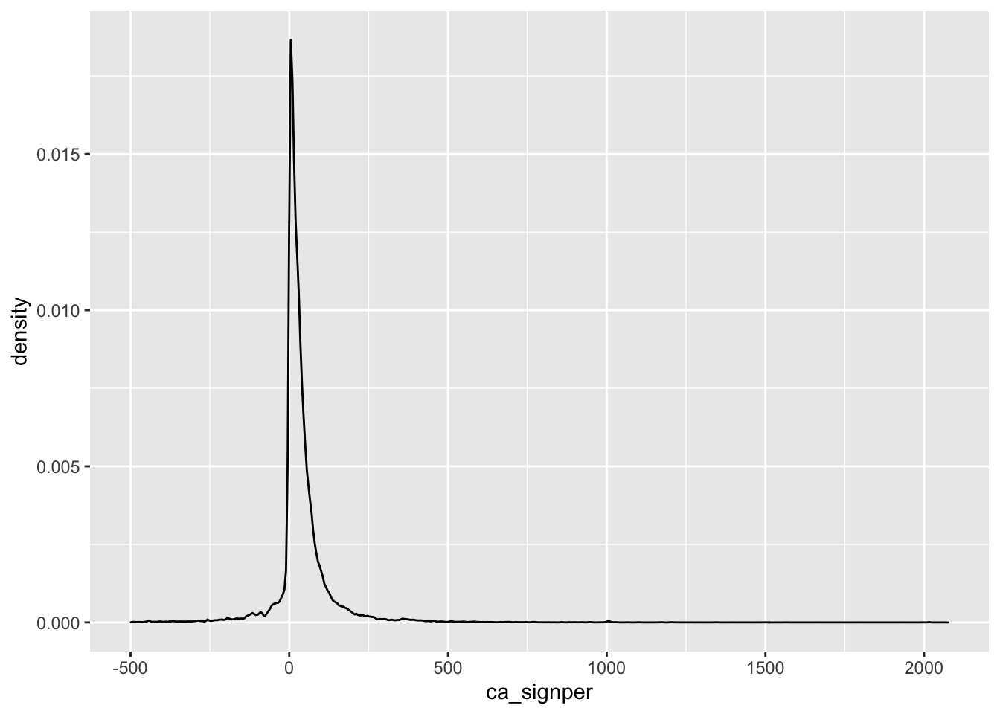
n
1 195`geom_smooth()` using method = 'gam' and formula 'y ~ s(x, bs = "cs")'Warning: Removed 13 rows containing non-finite values (stat_smooth).Warning: Removed 13 rows containing missing values (geom_point).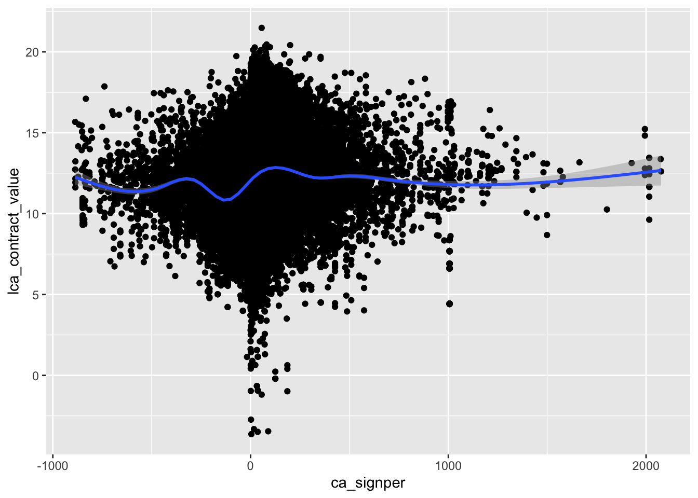